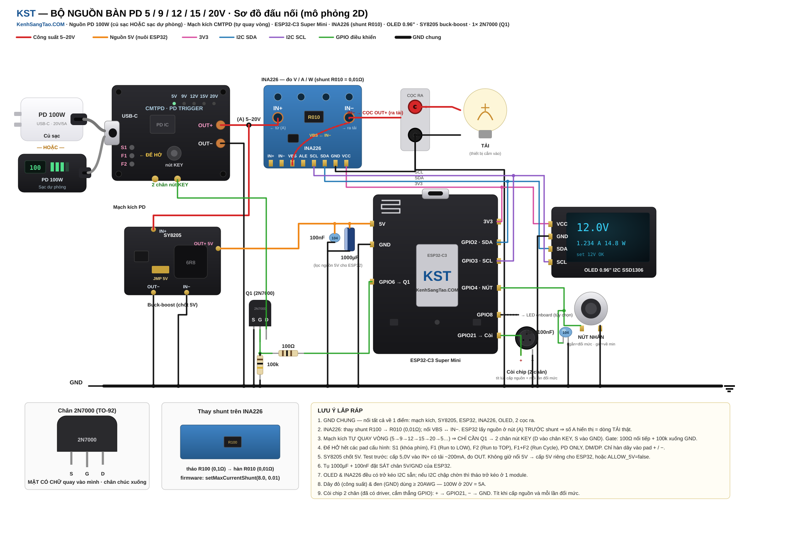
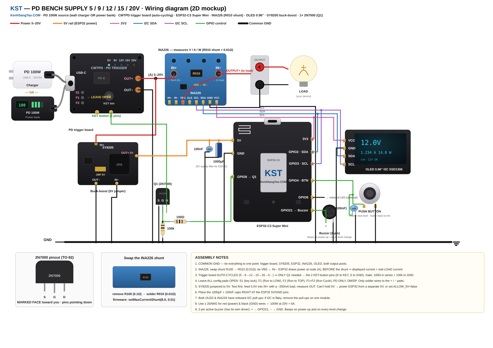

⚡ 5 mức điện áp PD
Mạch kích CMTPD tự quay vòng 5 → 9 → 12 → 15 → 20V. Mỗi xung vào nút KEY tiến đúng một nấc.
The CMTPD trigger cycles through 5 → 9 → 12 → 15 → 20V. Each KEY pulse advances one step.
KÊNH SÁNG TẠO .COM × Creative Channel
Bộ nguồn bàn DIY dùng ESP32-C3 SuperMini, lấy nguồn từ USB-C PD và chuyển nhanh giữa 5 mức 5 / 9 / 12 / 15 / 20V. INA226 đo điện áp, dòng và công suất; OLED hiển thị trực tiếp; có nút vật lý, còi và trang điều khiển Wi-Fi.
A DIY bench supply built around an ESP32-C3 SuperMini, powered from USB-C PD and cycling through 5 / 9 / 12 / 15 / 20V. INA226 measures voltage, current and power; an OLED shows live readings; control is available from the physical button and Wi-Fi page.
Firmware đã gộp sẵn thành 1 file duy nhất, nạp tại offset 0x0. Không rút cáp trong lúc nạp.The firmware is a single merged image, flashed at offset 0x0. Do not unplug during flashing.
🎁 Firmware hoàn toàn miễn phí dành cho anh em Fans Kênh Sáng Tạo.🎁 Firmware is completely free for Creative Channel fans.
Ảnh thực tế bộ nguồn, bố trí linh kiện và phần mạch bên trong.Real photos of the finished supply, component layout and internal electronics.
Mạch kích CMTPD tự quay vòng 5 → 9 → 12 → 15 → 20V. Mỗi xung vào nút KEY tiến đúng một nấc.
The CMTPD trigger cycles through 5 → 9 → 12 → 15 → 20V. Each KEY pulse advances one step.
Đo điện áp, dòng và công suất theo thời gian thực. INA226 dùng shunt R010 = 0.01 ohm.
Live voltage, current and power sensing. INA226 uses an R010 = 0.01 ohm shunt.
Nhấn ngắn: đổi sang nấc kế tiếp. Nhấn giữ khoảng 0.8 giây: tự chạy về mức thấp nhất.
Short press: next step. Hold for about 0.8 seconds: automatically return to the lowest level.
ESP32-C3 tự phát mạng KST-PD-Supply, không mật khẩu. Truy cập 192.168.4.1 để xem V/A/W và đổi mức.
ESP32-C3 creates the open KST-PD-Supply network. Browse to 192.168.4.1 for V/A/W monitoring and level control.
Còi chủ động báo khi cấp nguồn và sau mỗi lần chuyển nấc điện áp.
An active buzzer confirms power-up and each voltage-level change.
Thiết kế hướng tới nguồn PD tối đa khoảng 100W / 20V 5A, tùy khả năng củ sạc hoặc power bank.
Designed around PD sources up to about 100W / 20V 5A, depending on the charger or power bank.
Danh sách linh kiện chính dùng cho bộ nguồn. Các link mua sẽ được bổ sung dần.Main components used in the power supply. Purchase links will be added as they become available.
Bộ điều khiển chính, Wi-Fi AP và giao diện web.
Main controller, Wi-Fi AP and web interface.
Mua tại đâyBuy here5 → 9 → 12 → 15 → 20V
Mua tại đâyBuy hereThay trở shunt của INA226 từ R100 0.1Ω → R010 0.01Ω để mở rộng dải đo dòng từ khoảng 0.8A lên khoảng 8A, đủ cho nguồn 100W ở 20V.
Replace the INA226 shunt from R100 0.1Ω → R010 0.01Ω to increase the current measurement range from about 0.8A to around 8A, enough for a 100W supply at 20V.
Mua tại đâyBuy hereI2C · 128×64 · 4 pin · 0x3C · bản hiển thị vàng/xanhyellow/blue display version
Mua tại đâyBuy hereNuôi ESP32 từ đường nguồn PD, đầu ra chốt 5V ổn định.
Provides a stable 5V rail for the ESP32 from the PD output.
Mua tại đâyBuy hereN-channel TO-92 · Q1 giả lập nút KEYsimulates the KEY button
Mua tại đâyBuy here100 ohm nối tiếp gate Q1, 100k ohm kéo gate xuống GND.
100 ohm gate series resistor and 100k ohm gate pulldown.
Mua tại đâyBuy hereGPIO4 → GND
GPIO21
Mua tại đâyBuy hereDùng để lọc và ổn định đường nguồn 5V cấp cho ESP32-C3.
Used to filter and stabilize the 5V rail powering the ESP32-C3.
Đầu ra tải sau INA226.
Load output after the INA226.
Nên dùng dây nguồn tối thiểu khoảng 20AWG cho nhánh công suất.
Use roughly 20AWG or heavier for the power path.
Hai quạt tròn 5V, đường kính khoảng 32mm, dùng để thông gió và làm mát linh kiện bên trong vỏ.
Two 5V round fans, approximately 32mm in diameter, used to ventilate the enclosure and cool the internal electronics.
Mua tại đâyBuy hereDùng adapter hoặc sạc dự phòng USB-C PD hỗ trợ các mức 5V / 9V / 12V / 15V / 20V.
Use a USB-C PD wall charger or power bank that supports 5V / 9V / 12V / 15V / 20V.


⚠️ Tất cả module phải dùng GND chung. Đường công suất nên đi dây đủ lớn cho dòng tải.⚠️ All modules must share a common GND. Use adequately sized wire for the power path.
| GPIO | Kết nốiConnection | Ghi chúNotes |
|---|---|---|
| 2 | I2C SDA | OLED + INA226OLED + INA226 |
| 3 | I2C SCL | OLED + INA226OLED + INA226 |
| 4 | Nút nhấnPush button | INPUT_PULLUP → GND |
| 6 | Q1 gate | 100 ohm → 2N7000 → KEY |
| 7 | Q2 gate | Không dùng ở bản hiện tại, USE_GATE_BASE=falseUnused in the current build, USE_GATE_BASE=false |
| 8 | LED | LED onboard, tùy boardOnboard LED, board-dependent |
| 21 | CòiBuzzer | Còi chủ độngActive buzzer |
ESP32 tạo xung khoảng 150ms qua 2N7000 để giả lập một lần bấm KEY trên mạch kích PD.
The ESP32 creates an approximately 150ms pulse through the 2N7000 to simulate one KEY press on the PD trigger.
Sau khi chuyển nấc, firmware đọc INA226 và chờ điện áp ổn định rồi mới cập nhật OLED.
After a step change, firmware reads the INA226 and waits for the voltage to settle before updating the OLED.
Nhấn giữ nút vật lý khoảng 0.8 giây. Firmware phát nhiều xung cho tới khi INA226 xác nhận đã về mức thấp nhất.
Hold the physical button for about 0.8 seconds. Firmware pulses repeatedly until INA226 confirms the lowest level.
Tên mạng:Network: KST-PD-Supply
Mật khẩu:Password: Không có — mạng mởNone — open network
Địa chỉ:Address: 192.168.4.1
Trang web hiển thị V / A / W theo thời gian thực và có nút đổi sang nấc điện áp tiếp theo. Muốn tự động về mức thấp nhất, dùng nút vật lý và nhấn giữ.The web page shows live V / A / W values and provides a button for the next voltage step. To return automatically to the lowest level, hold the physical button.
Vỏ được thiết kế riêng cho KST PD Bench Supply. Anh em có thể tải file 3D miễn phí trên MakerWorld để tự in.This enclosure was designed specifically for the KST PD Bench Supply. You can download the 3D-print files for free on MakerWorld.
Dùng Chrome/Edge trên máy tính, bấm Nạp firmware ở đầu trang và chọn đúng ESP32-C3. Hoặc tải file BIN và nạp tại 0x0.
Use desktop Chrome/Edge, click Install firmware at the top and select the ESP32-C3. Or download the BIN and flash it at 0x0.
Nếu dùng nấc 5V, module cấp nguồn cho ESP32 phải giữ được 5V ổn định khi đầu vào cũng ở khoảng 5V.
If the 5V step is enabled, the ESP32 supply module must still maintain a stable 5V rail when its input is also around 5V.
OLED 0x3C + INA226 0x40 → SDA GPIO2 / SCL GPIO3.
Nhấn ngắn để đổi nấc. Nhấn giữ ~0.8 giây để về nấc thấp nhất.
Short press for the next step. Hold ~0.8 seconds to return to the lowest step.
Kết nối KST-PD-Supply rồi mở 192.168.4.1.
Join KST-PD-Supply and open 192.168.4.1.
Bộ hoàn thiện dùng 2 quạt DC 5V 32mm để tạo luồng gió qua bên trong vỏ. Đấu quạt vào đường 5V và GND, chú ý đúng cực.
The finished build uses two 32mm 5V DC fans to move air through the enclosure. Connect them to the 5V rail and GND with correct polarity.
Công suất và dòng tối đa thực tế phụ thuộc củ sạc/power bank, cáp USB-C, mạch kích và dây bên trong. Không vượt khả năng của từng linh kiện.
Actual current and power limits depend on the charger/power bank, USB-C cable, trigger board and internal wiring. Do not exceed the rating of any component.
Kiểm tra 3.3V, GND, SDA GPIO2, SCL GPIO3. OLED mặc định 0x3C; INA226 mặc định 0x40.
Check 3.3V, GND, SDA GPIO2 and SCL GPIO3. OLED defaults to 0x3C; INA226 defaults to 0x40.
Kiểm tra dây và mối hàn nút GPIO4 → GND. Firmware đã có chống dội nút.
Check the GPIO4 → GND button wire and solder joints. Firmware already includes button debouncing.
Kiểm tra nguồn PD, cáp USB-C và mạch kích. Dự án đã từng gặp board CMTPD lỗi riêng ở hai nấc cao.
Check the PD source, USB-C cable and trigger board. A CMTPD board with a hardware fault specifically at the top two steps was encountered during this build.
Thử cáp USB có truyền dữ liệu và đổi cổng USB. Nếu vẫn không nạp được, giữ BOOT, nhấn RESET/RST một lần, thả RESET rồi thả BOOT để đưa ESP32-C3 vào chế độ nạp.
Use a data-capable USB cable and try another USB port. If flashing still fails, hold BOOT, tap RESET/RST once, release RESET, then release BOOT to enter download mode.